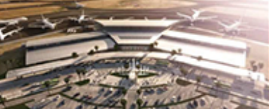
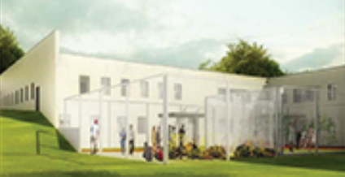
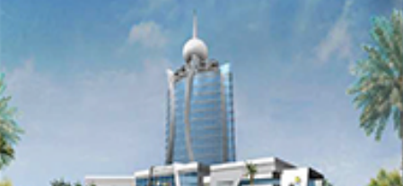
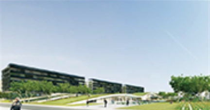
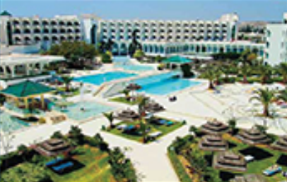
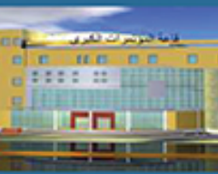
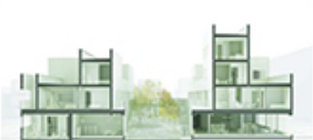

Infrastructures & transport
Réalisations
France, Tunisie, Mauritanie, Tchad, Congo, Libye, Arabie Saoudite, Guyane : une sélection de projets conçus et pilotés par ProFlux, de la piscine collective à l'aéroport international.
Projets phares
8 projets affichés








Grands projets
| Projet | Lieu | Envergure |
|---|---|---|
| Campus universitaire Condorcet | Paris – Aubervilliers, France | 180 000 m² · 450 M€ |
| King Abdallah International Convention Center | Arabie Saoudite | 230 000 m² |
| International Business City (CIA) | N'Djamena, Tchad | 20 ha · 358 M€ |
| Hôpital Blanche Gomes | Brazzaville, Congo | 8 200 m² · 30 M€ |
| Centre de Biologie Intégrative (CBI) | France | 4 600 m² · 13,2 M€ |
| Groupe scolaire Michelis | Neuilly-sur-Seine, France | 7 240 m² · 15 M€ |
| Résidence universitaire du CROUS — Les Rives de l'Yvette | Versailles, France | Bât. 231-232-233 |
| Usine pharmaceutique SIPHAT | Tunisie | Salles propres ISO 14644-1 |
Références par type de mission
Nos terrains d'intervention
Parlons de votre prochain projet
Envoyez-nous le programme, les plans ou le CCTP : nous revenons vers vous sous 48 h ouvrées avec une proposition d'intervention.